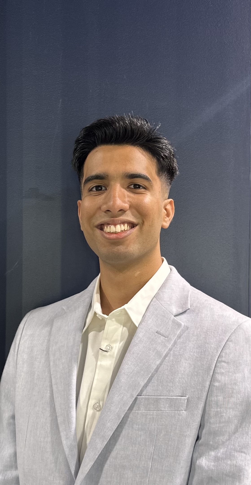

I'm Neil Dadhich.
Mechatronics & Software Developer
Problem-solver with expertise in engineering, computer science, and emerging technologies. Passionate about consulting and delivering innovative solutions that drive impact.

Problem-solver with expertise in engineering, computer science, and emerging technologies. Passionate about consulting and delivering innovative solutions that drive impact.
With a proven track record of streamlining workflows and leading teams, I reduced operational workloads by 80% at AKIN AI, led hackathon teams to top placements, and boosted community engagement as Vice-President of UNSW Hindu Society.